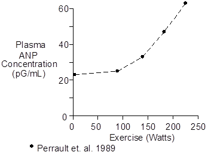
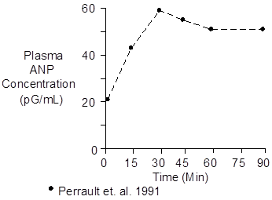

Exercise > Atrial Natriuretic Peptide
Atrial natriuretic peptide is also known as atrial natriuretic factor and atriopeptin, sometimes abbreviated as ANP or ANF.
There are several structurally similar peptides, ranging from 21 to 33 amino acids, which have natriuretic properties. But one, having 28 amino acids, comes directly from the atria and is quantitatively the most important.
Plasma concentration of atrial natriuretic peptide increases during exercise in proportion to the intensity of the exercise.

The stimulus for increased atrial natriuretic peptide release appears to be increased pressure and distension at the right and left atria.
Plasma atrial natriuretic peptide concentration increases with a time constant of about 15 minutes. Thus, ANP measurements made during short-term exercise will probably not represent steady-state values.
The data shown below were collected during upright cycling at 67% of maximum O2 uptake.

Plasma atrial natriuretic peptide concentrations are greater during supine exercise than during upright exercise at comparable workloads (Perrault et. al. 1989), presumably due to the increased central pressures.
There is probably no physiological value to ANP increases during exercise. The increases can be thought of as an incidental response to the pressure increases needed to generate large increases in cardiac output.
 Chemistry
Chemistry
The most important atrial natriuretic peptide has 28 amino acids and a molecular weight of 3060.
A typical venous blood concentration is 20 pMol/L.
Units
Popular units for atrial natriuretic peptide are pG/mL and pMol/L
To convert pG/mL to pMol/L, multiply by 0.327.
References
Perrault, H., M. Cantin, G. Thibault, G.R. Brisson, G. Brisson and M. Beland. Plasma atrial natriuretic peptide during brief upright and supine exercise in humans. J. Appl. Physiol. 66:2159-2167, 1989.
Perrault, H., M. Cantin, G. Thibault, G.R. Brisson, G. Brisson and M. Beland. Plasma atriopeptin response to prolonged cycling in humans. J. Appl. Physiol. 70:979-987, 1991.